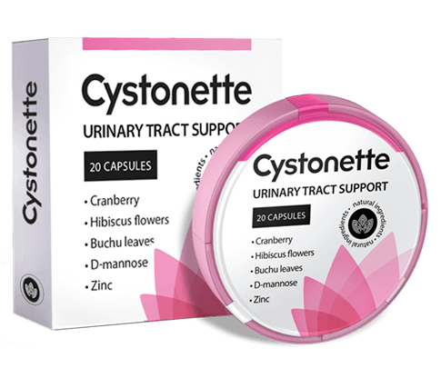

Onemocnění, které se vždy objevuje ve špatný čas - cystitida. Jak as čím léčit?
15.07.2020
Cystitida převažuje u lidí ve věku 20–70 let a u té nemoci je velmi malý počet zotavených, kolem 20%. Proč je ale tuto nemoc tak obtížné léčit a také úplně vyléčit, nám poví doktor lékařských věd, profesor MUDr.Karel Stanzel.

- Pane doktore Stanzle, dobrý den! Prosím, řekněte nám, co je to cystitida a kdo je ve skupině ohrožení?
- Dobrý den! Cystitida je zánětlivé onemocnění sliznice močového měchýře, rozšířené převážně u žen. U mužů a dětí se zánět vyskytuje mnohem méně často, a projevuje se méně. Je doprovázen strašně nepříjemným pocitem během močení.
- Je tato nemoc tak vážná?
- Toto je zákeřné onemocnění. Devět z deseti pacientů ke mně přichází, když se s tím nedokážou vyrovnat samy. Jako doktor pacientům které tuto nemoci zanedbává mohu vynadát ale na druhou stranu jím rozumím. Situace je velmi intimního charakteru a je nepříjemná, chtějí se toho na druhou stranu co nejdříve zbavit. V takových případech, člověku se chce jen normálně žít
Jaká je první myšlenka u člověka s akutní bolestí? Bolest se dá zmírnit. A lze ji zmírnit pouze pomocí pilulek. Před instinkty do lékárny na antibiotika tedy běží.
Jsou antibiotika neúčinná?
- No, to úplně ne. Opravdu eliminují bolest. Vypadá to občas, že nemoc je úplně vyléčena. Ale nikam to nezmizí. Měsíc nebo dva poté nemoc se znovu objeví. Pak už se stává chronickou. Antibiotika pak jen měla by být vybírána na základě laboratorních krévních testů.
Nejprve identifikujte patogen, pak ho musíte eliminovát pomocí antibiotiků. Pokud je budete brát náhodně, efekt bude jednorázový a pak nemoc se zase vrátí.

- Jaké jsou ale příčiny a příznaky cystitidy?
- Nemoc může být způsobena různými příčinami infekční a neinfekční povahy. Bez ohledu na to tyto příznaky jsou všude stejné:
- pálení v pochvě, bolest a bolest;
- časté močení;
- malé množství vyloučené moči;
- moč tmavé barvy, s krví;
- necítíte se dobře, mírné zvýšení tělesné teploty, slabost.
Nejběžnější příčiny cystitidy jsou:
- bolesti při sexu;
- oslabená imunita;
- pronikání bakterií přes močovou trubicí do močového měchýře;
- ložiska chronické infekce v těle;
- přenesená gynekologická, pohlavní choroby;
- podchlazení pánevních orgánů;
- traumatický efekt;
- hormonální poruchy v těle;
- rysy anatomické struktury močové trubice.
- Jaké je nebezpečí cystitidy a nesprávné léčby?
- Bez ohledu na to, jak se poprvé objeví cystitida, další kvalita života závisí na tom, jak se braní tělo. Pokud jste již byli léčeni antibiotiky (a to je v budoucnosti nejčastějším a neúčinným způsobem), pak je vaše tělo ohroženo.
Během času se u bakterií vyvíjí rezistence na antibiotika, mutují, získávají imunitu. Je obtížnější léčit cystitidu, nemoc se stává chronickou. To znamená, že zůstáváte nemocná, infikovaná, i když není doprovázena závažnými příznaky cystitidy.
Mezi účinky cystitidy patří: močová inkontinence, pyelonefritida, ledvinové abscesy, selhání ledvin a neplodnost.

- A přesto lze cystitidu vyléčit?
- Určitě. Ale brát antibiotika smíte pouze po důkladném lékařském vyšetření a pod úplnou kontrolou ošetřujícího lékaře, kterému důvěřujete. Bylinné přípravky jsou dobré pro prevenci chorob močových cest, odstranění chronické cystitidy a samozřejmě pro prevenci akutních.
- Pane doktore, mohl byste doporučit nějaké speciální léky?
- Možná s čistým svědomím mohu doporučit pouze . Rostlinný produkt s bohatým složením tzv. přírodních antibiotik. Na rozdíl od syntetických chémických léků tento přírodní, rostlinný lék nepoškozuje organismus. Z hlediska účinnosti není ten risk menší než u obvyklých léků.
Možná je to jediný lék, který lze užívat bez lékařského předpisu - jak při prvních příznakech cystitidy, tak i v pokročilých případech. Cena je navíc není tak dobrá.
- Může pacient provádět léčbu tuto nemoci sám?
- Určitě, lidé se to už se snažejí vyléčit sami. Díky bohu, nyní je vyvinut krásný lék , který nezpůsobuje tělu takové poškození jako jakýkoli chémický - farmaceutický lék.
Ale ve složení není žádná chémie. Má rostlinný obsah. Účinek je podobný jako u těch které předepisuje lékář, nemá žádné vedlejší účinky. Tento zcela přírodní a neškodlivý lék, samozřejmě,dokonce trvám na tom, člověk může v klidu brát doma a nebát se žádných vedlejších účinků.
- Děkuji za rozhovor, pane doktore Stanzle!
Pro všechny do 07/14/2020 je k dispozici s 50% slevou. Můžete si ji objednat ve formuláři níže
Jsem ráda že jsem našla tento článek včas. Mockrát vám děkuji! Objednala jsem , opravdu se na to těším.
Neměla jsem akutní formu cystitidy. Ani žádné bolesti, ale po močení jsem se vždy cítila nepohodlí. Lékař doporučil . Vynikající lék, velmi mi to pomohl.
Moje sestra studuje medicínu, řekla mi, že cystitida může způsobit velmi závažné následky.
Nejhorší je, že cystitida se velmi rychle stává chronickou. To vím z vlastní zkušenosti. Zkusím . Díky za článek a doporučení!
Nedokážu si představit, jak můžete jít k doktorovi, když sotva dobíháte na toaletu při inkontinenci. se stal mým spasením !!!
Bohužel, také jsem se nemohla dostat k doktorovi velmi dlouhou dobu. Mohla bych se objednát další týden, mohla bych umřít z bolesti.
Poprvé jsem se setkala s cystitidou ve věku 30 let. Cítila jsem strašné bolesti během močení, stejně jako i při sexu. Okamžitě jsem šla za lékařem. Také mi předepsal . Lék mi hodně pomohl, rychle odstranil veškeré příznaky cystitidy. Doporučují!
Čím jsem starší, tím strašidelnější je ...
Zdraví nesmíte zanedbávat od mládí, abyste neměli později podobné problémy.
Cystitidu považují za prokletí! Občas to projde a pak se znovu objeví. Strašné bolesti, křeče a to vše s malým synem v náručí. Dozvěděla jsem se o od přítele, tento lék byl mou poslední naději. A nebylo to zbytečné. Po chvíli byly příznaky zmírněny a potom a zmizel úplně. je skvělý lék!